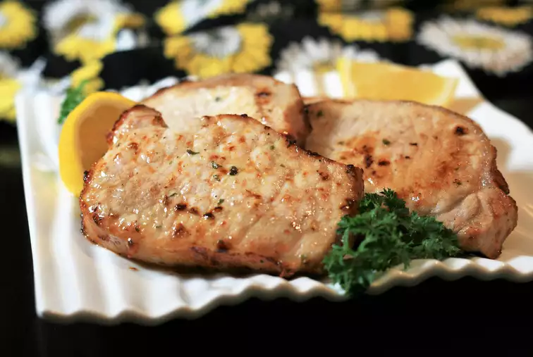

Air Fried Pork Chops
What could be simpler than ranch seasoning mix and 10 minutes in the air fryer? I prefer my chops slightly pink to ensure juiciness, but feel free to add an extra minute on each side for well done. Try different varieties of ranch mix (like spicy or bacon) to change up the flavor.

Ingredients
- 4 boneless, center-cut pork chops, 1-inch thick
- cooking spray
- 2 teaspoons dry ranch salad dressing mix (such as Hidden Valley Ranch®)
- aluminum foil
Directions
- Place pork chops on a plate and lightly spray both sides with cooking spray. Sprinkle both sides with ranch seasoning mix and let sit at room temperature for 10 minutes.
- Spray the basket of an air fryer with cooking spray and preheat the air fryer to 390 degrees F (200 degrees C).
- Place chops in the preheated air fryer, working in batches if necessary, to ensure fryer is not overcrowded.
- Cook for 5 minutes. Flip chops and cook 5 minutes more. Let rest on a foil-covered plate for 5 minutes before serving.